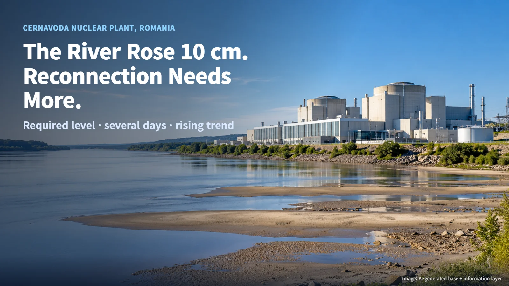
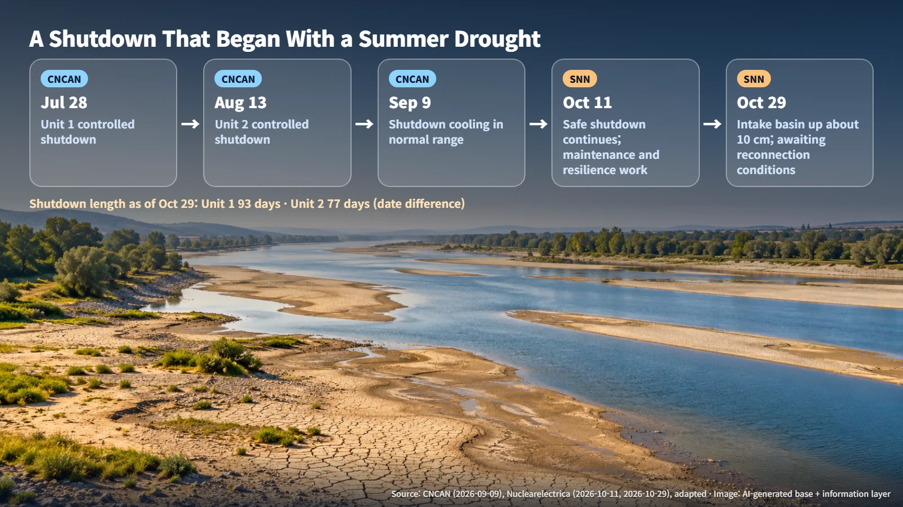
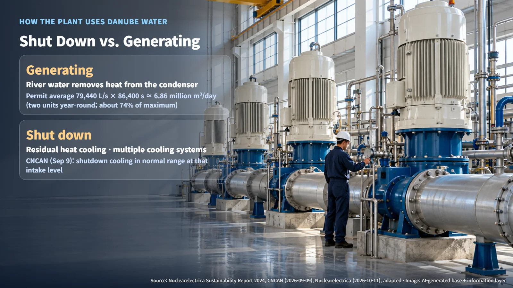
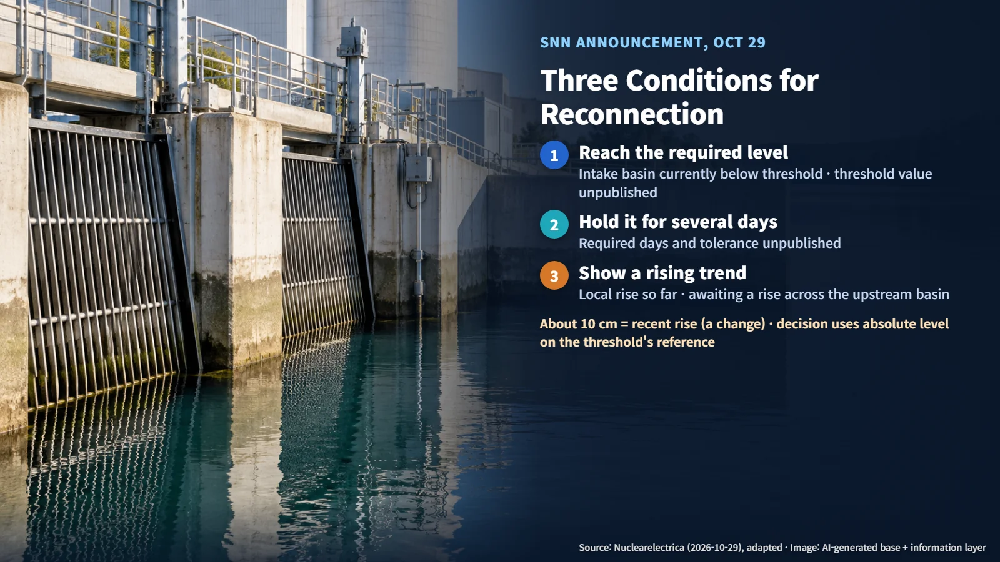

Romania · Plant Operations
The River Rose 10 cm, So Why Is the Reactor Still Off? Cernavoda's Conditions for Reconnecting to the Grid
The intake basin at Cernavoda rose about 10 cm, but reconnection requires the required level, several days of holding it and a rising trend.
When news arrives that a river is rising again, it is natural to assume the power plant on its bank will be back online soon. Romania's Cernavoda (Cernavodă) nuclear power plant is in exactly that situation. On October 29, 2026, the operator, Nuclearelectrica (SNN), reported that the water level in the plant's intake basin had risen by about 10 cm, and in the same announcement said that Units 1 and 2 remain in a safe shutdown state. Let's look at why a higher water level still leads to a decision to wait.

Three Months of Shutdown That Began With a Summer Drought
The shutdown started in midsummer. According to CNCAN, Romania's nuclear regulator, Unit 1 entered a controlled shutdown (bringing the reactor down by reducing power according to planned procedures) on July 28, and Unit 2 followed on August 13. CNCAN explained that a prolonged drought and high temperatures had sharply reduced the flow and water level of the Danube, and that shutting down both units was a preventive measure taken in line with technical assessments and operating procedures. The regulator also reported no radiological impact on the population or the environment.
Counting to October 29, the length of each shutdown works out as follows:
- Unit 1: July 28 to October 29 = 3 remaining days of July + 31 days of August + 30 days of September + 29 days of October, which comes to 93 days
- Unit 2: August 13 to October 29 = 18 remaining days of August + 30 days of September + 29 days of October, which comes to 77 days

In the meantime, SNN announced on October 11 that it was using the shutdown period for maintenance and resilience improvements, and that it had begun expert consultations on medium- and long-term options.
Two Ways a Nuclear Plant Uses River Water: Shut Down Versus Generating
How a nuclear plant uses river water depends heavily on its operating state. While generating power, a large amount of heat comes out of the condenser, the component that turns the steam leaving the turbine back into water. According to SNN's 2024 Sustainability Report, Cernavoda removes this heat using Danube water. The report explains that the cooling water flow depends on the plant design and the temperature of the incoming water, with little room for adjustment, so a reduction in available water affects how smoothly the units can run.
The same report's table of water-management permit volumes lists a maximum of 108,000 L/s and an average of 79,440 L/s. Converting the average into a daily figure gives:
- 79,440 L/s = 79.44 m³/s, and 79.44 m³/s × 86,400 seconds comes to about 6.86 million m³ per day
- Average ÷ maximum = 79,440 ÷ 108,000, which comes to about 74%
These figures are a permitted range based on both units operating year-round. The volume actually withdrawn during the 2026 low-water period is recorded in separate measurement data. Even so, a scale of several million tonnes of water a day shows how much power generation relies on the river.
A shut-down reactor is a different story. Even after the chain reaction stops, the remaining heat (decay heat) still has to be removed, and the water volume and conditions needed for that are managed separately from those for generation. On September 9, CNCAN reported that, at the intake basin level at that time, the shutdown cooling systems were operating within normal parameters. On October 11, SNN likewise explained that it uses multiple cooling systems designed to operate at different cooling water levels, selected according to technical parameters, and that the authorities' measures help protect the pumps and maintain the redundancy of the cooling systems. In short, keeping a shut-down plant safe and restarting generation are managed against different water conditions. Cooling in the current shutdown state is maintained through these systems and procedures, while the water level required to resume generation has yet to be reached.

What 10 cm Means, and the Three Conditions for Reconnection
The roughly 10 cm that SNN reported on October 29 is the recent rise observed in the plant's pump intake basin, in other words a change in level. Whether a unit can reconnect is judged by the absolute water level, measured on the same reference as the threshold in the operating procedures. Think of a staircase: climbing one step and arriving at the target floor are two separate pieces of information. SNN stated that the intake basin level is still below the required threshold.
SNN set out three conditions for reconnection:
1. Reaching the required water level 2. Holding that level for several days 3. A rising trend
All three are required together because power generation runs continuously, day after day. A single day's improvement may be a temporary fluctuation; only a level that holds for several days and keeps climbing gives confidence that cooling water can be supplied reliably. SNN described the latest rise as a local improvement and said that a rise across the wider upstream basin has not yet followed. The intake level can stay up for long only when there is more water in the river as a whole, which is why the upstream outlook is assessed alongside the local reading.

The required level for each unit, the number of days it must be held and the allowable variation, the method used to determine the trend, and the difference in conditions between running one unit and running two have not been published. The exact start and end times of the 10 cm rise were also left out of the announcement. As a result, the remaining gap in water level or a date for reaching it is difficult to calculate from public information, and the timing of reconnection will be confirmed through the operator's follow-up announcements.
Who Decides What, and the Next Checkpoints
Responsibilities in the reconnection process are divided. SNN makes the operational decisions and plans to request connection to the national power grid as a priority once the conditions are met. CNCAN continuously oversees compliance with licenses and regulations, as well as preventive measures and on-site activities carried out under procedures. SNN has stated that the current safe shutdown state poses no risk to nuclear safety.
Work on the river itself is also under way. CNCAN described the Danube works set by the National Committee for Emergency Situations (CNSU) as an important element in securing the long-term water level needed for shutdown cooling and for a return to rated power. How much any individual project has raised the water level has not been published.
The next checkpoints are clear: whether the intake basin level reaches the threshold, whether it holds for several days, whether a rise in the upstream basin follows, and when SNN's follow-up disclosures record a reconnection request and the actual grid connection. Cernavoda's case shows how closely a nuclear plant's operation is tied not only to the technology inside the reactor but also to the flow of the river outside it.